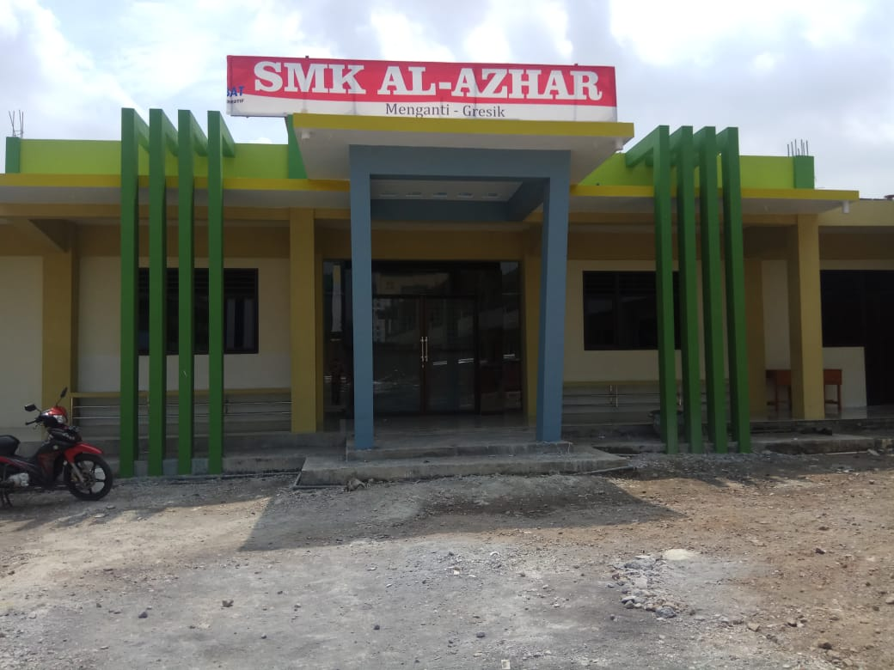

About Author
Saya mahasiswa Universitas Narotama Surabaya program studi Teknik Informatika fakultas Ilmu Komputer. Universitas Narotama (UN) merupakan Perguruan Tinggi Swasta yang Modern dan Berbasis Teknologi Informasi di Kota Surabaya, Jawa Timur Indonesia. Didirikan pada tanggal 8 Februari 1981 dan meraih Akreditasi Perguruan Tinggi dengan predikat " Sangat Baik ". Universitas Narotama Mendapat Peringkat-24 se Indonesia versi Webometrics untuk tahun periode 2021. Universitas Narotama (UN) Surabaya masuk Peringkat 7 dari 20 Perguruan Tinggi Swasta (PTS) di Indonesia dalam pemeringkatan yang dilansir situs resmi Webometrics, salah satu lembaga pemeringkatan terbaik di dunia.
Introducing Self
- Name: Sindy Dwi Lestari
- Date: 14 December 2000
- Adress: Jl. Sidomulyo Menganti, Gresik
- Email: sindydwilestari16@gmail.com
Skills
Skills yang saya miliki dalam bidang pemrograman saya tampilkan dalam bentuk presentase di bawah ini, yang menurut saya paling kompeten :
Purpose
Salah satu perkembangan media pembelajaran yang saat ini masih baru adalah media pembelajaran dengan berbasis TI. Di era globalisasi dan informasi ini,perkembangan media pembelajaran juga semakin maju. Penggunaan Teknologi Informasi(TI) sebagai media pembelajaran sudah merupakan suatu keharusan. Meskipun perancangan media berbasis TI memerlukan keahlian khusus, bukan berarti media tersebut dihindari dan ditinggalkan.
Proses pembelajaran yang baik haruslah memuat aspek interaktif, menyenangkan, menantang, memotivasi dan memberikan ruang yang lebih bagi siswa untuk dapat mengembangkan kreativitas dan kemandirian, sesuai dengan bakat dan minat siswa. Media pembelajaran yang menarik juga sangat diperlukan bagi siswa SMK, dikarenakan dalam pembelajaran SMK lebih mengutamakan praktikum dari pada teori. Perlu dipertimbangkan dalam pemilihan media yaitu tujuan pembelajaran, efektif, mudah diperoleh, peserta didik, penggunaan, tidak kaku, biaya, dan kualitas.
LPI SMK Al-Azhar Menganti
LPI SMK Al - Azhar beralamatkan lengkap di Jl. Raya Menganti Krajan 474 Kec. Menganti Kab. Gresik Prov. Jawa Timur. LPI SMK Al - Azhar didirikan pada tanggal 10 Desember 2007 dengan SK Yayasan 2007.
LPI SMK Al - Azhar yang merupakan Sekolah dibawah naungan Pondok Pesantren “DARUL IHSAN” Menganti - Gresik. Berawal dari SMKN 1 Cerme Kelas jauh, kini LPI SMK Al - Azhar telah berkembang dan mandiri. Telah banyak kemanjuan di LPI SMK Al - Azhar diantaranya bersertifikat ISO 9001 : 2008, terbentuknya Lembaga Sertifikasi Profesi (LSP), Program Teaching Factory, dan ber-MoU dengan beberapa industri.
Dalam sejarahnya yang panjang, SMK Al-Azhar Menganti Gresik telah memberikan layanan terbaik bagi masyarakat sehingga memperoleh kepercayaan dan dukungan sehingga keberhasilannya telah mengukir prestasi yang gemilang dan memiliki semangat, keyakinan, dan keberhasilan yang besar. Menghhasilkan lulusan berprestasi.

Pemrograman Web dan Perangkat Bergerak (Mobile)
Resume
HTML
HTML adalah Bahasa standar pemrogaman yang digunakan untuk membuat halaman website, yang diakses melalui internet. Singkatan dari "Hypertext Markup Language" atau "bahasa markup".
Macam-Macam Browser
Ada beberapa macam browser yang bisa digunakan dalam pemrograman untuk mencoba hasil coding antara lain :
Konsep WWW
Web (World Wide Web) merupakan salah satu layanan yang didapat oleh pemakai komputer yang terhubung ke internet, yang dapat memudahkan pengguna komputer untuk berinteraksi dengan pengguna internet lainnya dan mencari informasi yang diperlukan.
Teknologi Aplikasi Web
Aplikasi web adalah suatu aplikasi yang berbentuk client atau server yang dapat membentuk halaman-halaman web berdasarkan permintaan pemakai. Client adalah pemakai yang meminta halaman web sedangkan server adalah penyedia layanan yang melayani permintaan dari pemakai.
Macam-Macam Bahasa Pemrograman
- HTML
- PHP
- CSS
- JavaScript
PHP dan CSS
PHP
PHP: Hypertext Preprocessor adalah bahasa pemrograman yang dapat dijalankan di server (server side programming) yang artinya PHP membutuhkan sebuah server untuk dapat diproses.
CSS
CSS merupakan bahasa pemrograman yang digunakan untuk mengatur sebuah tampilan (desain) suatu Halaman Web.
Materi Pemrograman Web dan Perangkat Bergerak (PWPB)
Beberapa materi yang admin berikan pada kali ini adalah dari pemahaman awal mengenai konsep teknologi aplikasi web, belajar HTML, CSS, Javascript dan sampai dengan membuat web menggunakan bahasa pemrograman PHP dasar.
- All
- HTML
- CSS
- JavaScript
- PHP


{kind=link}
{kind=link}
{kind=link}
{kind=link}
{kind=link}
{kind=link}
{kind=link}
{kind=link}
{kind=link}
{kind=link}
{kind=link}
{kind=link}
{kind=link}
{kind=link}
{kind=link}
{kind=link}
{kind=link}
{kind=link}
{kind=link}
{kind=link}
{kind=link}
{kind=link}
{kind=link}
{kind=link}
{kind=link}
{kind=link}
{kind=link}
{kind=link}
{kind=link}
Contact
Don't Be Shy Ask Me!!
If there are difficulties, We is here to help Write your question and send it to the contact below
Location School :
Menganti Krajan Gg. 7 No.474, Krajan, Menganti, Kec. Menganti, Kabupaten Gresik, Jawa Timur 61174
Email RPL:
rpl.alazharmgt@gmail.com
Call :
+62838-5665-2008
URL :
http://smk.alazhargresik.id/
Email School :
smkalazharmenganti@ymail.com